Boston Travel Guide
Capital and most populous city of Massachusetts is one of the oldest municipalities in the United States and the scene of several key events of the American Revolution.


-400.jpg)


Places to See in Boston
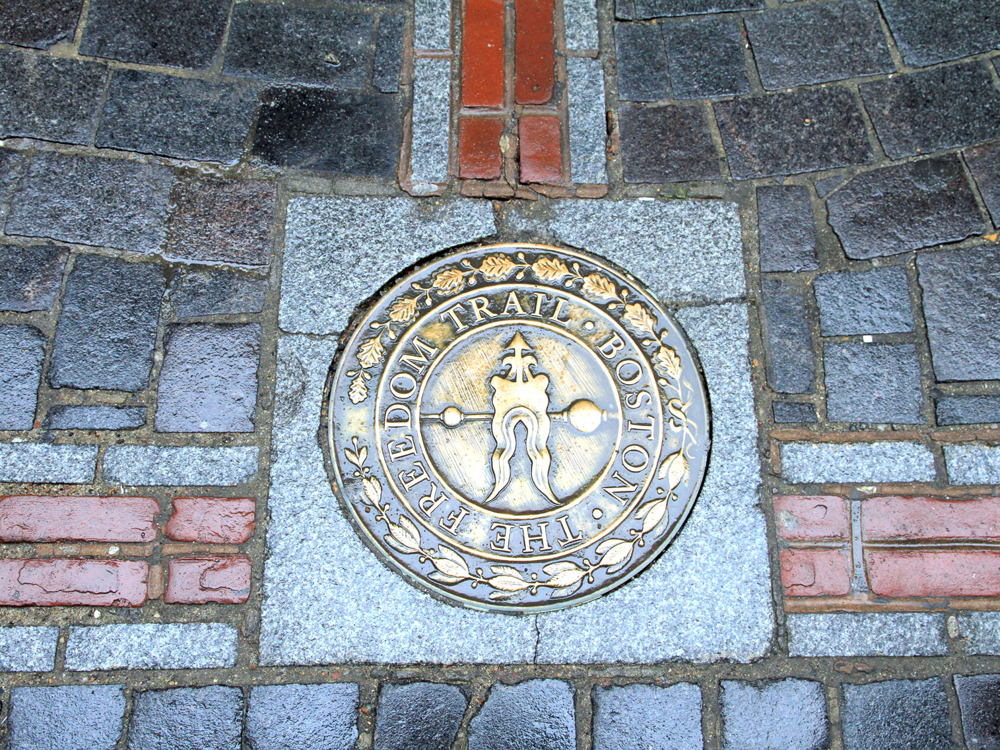
Ingfbruno, CC BY-SA 3.0, via Wikimedia Commons; Image Size Adjusted

Freedom Trail
2.5-mile-long (4.0 km) path through downtown Boston, Massachusetts, that passes by 16 locations significant to the history of the United States including Bunker Hill Monument, Faneuil Hall, Kings Chapel and Paul Revere House.

Ian Howard, CC BY-SA 3.0, via Wikimedia Commons; Image Size Adjusted

Beacon Hill
Historic neighborhood in Boston known for federal-style rowhouses, narrow gaslit streets and brick sidewalks
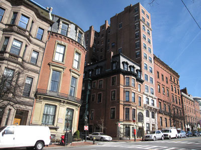
M2545, Public domain, via Wikimedia Commons; Image Size Adjusted

Beacon Street
Major thoroughfare in Boston, Massachusetts and its western suburbs and passes through many of Boston's central and western neighborhoods

TanRo, CC BY-SA 4.0, via Wikimedia Commons; Image Size Adjusted

Boston Central Library
Grand historic civic landmark pairing Renaissance Revival architecture with vast reading rooms, rotating exhibitions, tranquil courtyards, and one of the largest public literary collections in the nation.

andrewjsan, CC BY 2.0, via Wikimedia Commons; Image Size Adjusted

Boston City Hall
Seat of city government of Boston built in 1968 to assume the functions of the Old City Hall
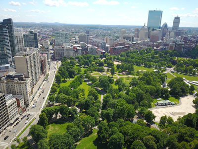
AbhiSuryawanshi, CC BY-SA 4.0, via Wikimedia Commons; Image Size Adjusted

Boston Common
Central public park in downtown Boston dating from 1634, is the oldest city park in the United States
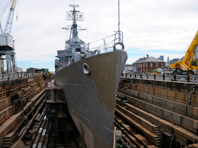
Jyothis, CC BY-SA 3.0, via Wikimedia Commons; Image Size Adjusted

Boston Navy Yard / Charlestown Navy Yard
One of the oldest shipbuilding facilities in the United States Navy
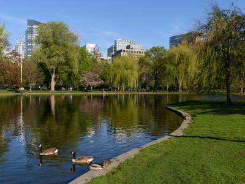
King of Hearts, CC BY-SA 4.0, via Wikimedia Commons; Image Size Adjusted

Boston Public Garden
Large park in the heart of Boston, adjacent to Boston Common, was the first public botanical garden in America
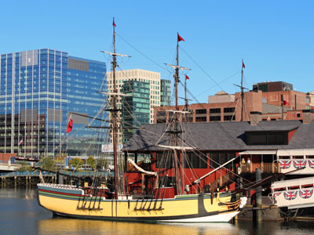
Robert Linsdell from St. Andrews, Canada, CC BY 2.0, via Wikimedia Commons; Image Size Adjusted
_(11062434853).jpg){kind=link}
Boston Tea Party Ships and Museum
Museum featuring reenactments, a documentary, a number of interactive exhibits, and two replica ships of the period
Ian Howard, CC BY-SA 3.0, via Wikimedia Commons; Image Size Adjusted
Boston Theater District
Historic entertainment hub featuring ornate theaters, Broadway shows, and a vibrant nightlife scene with dining and cultural attractions.
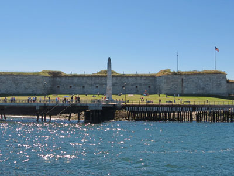
Robert Linsdell from St. Andrews, Canada, CC BY 2.0, via Wikimedia Commons; Image Size Adjusted
_(24662597450).jpg){kind=link}
Castle Island
Historic waterfront destination featuring a Revolutionary-era fort, harbor views, walking paths, beaches, fishing areas, monuments, and recreational spaces along Boston Harbor.
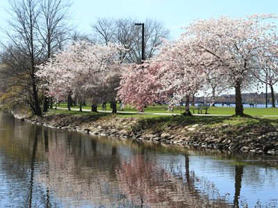
Ingfbruno, CC BY-SA 3.0, via Wikimedia Commons; Image Size Adjusted

Charles River Esplanade
Park situated in the Back Bay area of Boston, on the south bank of the Charles River Basin
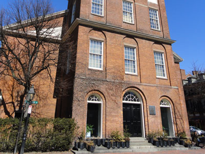
Daderot, Public domain, via Wikimedia Commons; Image Size Adjusted
_-_DSC00167.JPG){kind=link}
Charles Street Meeting House
Historic Beacon Hill landmark that evolved from a segregated church into a center of abolition, civil rights activism, and community transformation.
Ian Howard, CC BY-SA 3.0, via Wikimedia Commons; Image Size Adjusted
Cheers
Famous pub known for inspiring a beloved television sitcom, offering classic American fare and memorabilia in a cozy, wood-paneled setting.
Christopher Columbus Waterfront Park
Landscaped waterfront green space featuring walking paths, gardens, a trellis-covered promenade, open lawns, and harbor views for recreation and relaxation.
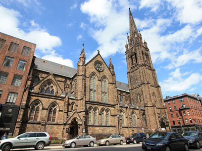
Cryptic C62, CC BY-SA 3.0, via Wikimedia Commons; Image Size Adjusted

Church of the Covenant
Historic Gothic Revival church renowned for its extraordinary Tiffany-decorated interior, stained-glass windows, intricate mosaics, and architectural craftsmanship.
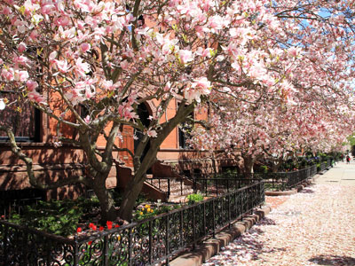
Ingfbruno, CC BY-SA 3.0, via Wikimedia Commons; Image Size Adjusted

Commonwealth Avenue
Historic tree-lined pedestrian promenade featuring formal gardens, monuments, shaded pathways, and open green spaces ideal for walking and sightseeing.
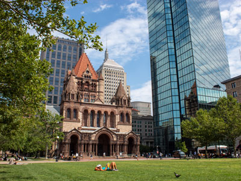
Gregg Squeglia, CC BY-SA 4.0, via Wikimedia Commons; Image Size Adjusted

Copley Square
Public square in Boston's Back Bay neighborhood featuring several architectural landmarks
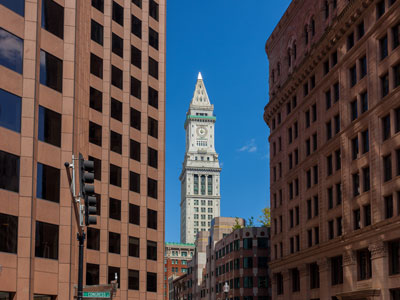
Marco Almbauer, CC0, via Wikimedia Commons; Image Size Adjusted

Custom House Tower
Skyscraper tower in McKinley Square, in the Financial District neighborhood of Boston
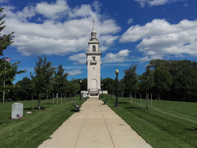
Louswimmin, CC BY-SA 4.0, via Wikimedia Commons; Image Size Adjusted

Dorchester Heights
Central area of South Boston featuring a 115-foot (35 m) marble tower, honoring the evacuation of Boston during the American Revolutionary War
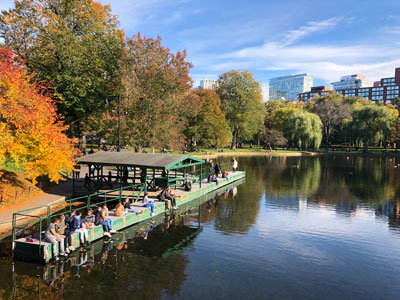
FASTILY, CC BY-SA 4.0, via Wikimedia Commons; Image Size Adjusted

Emerald Necklace
1,100-acre (4.5 km2; 450 ha) chain of parks linked by parkways and waterways in Boston designed by landscape architect Frederick Law Olmsted
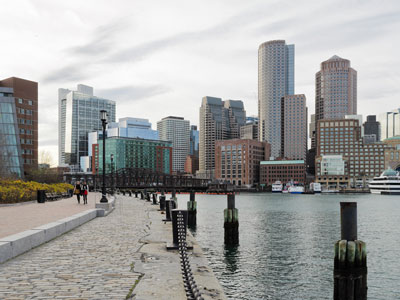
King of Hearts, CC BY-SA 4.0, via Wikimedia Commons; Image Size Adjusted

Fan Pier Park
Waterfront green space featuring landscaped paths, harborfront seating, open lawns, fire pits, and panoramic views of the Boston skyline and harbor.
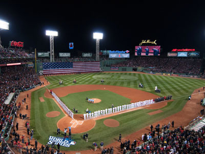
Rick Berry, Public domain, via Wikimedia Commons; Image Size Adjusted

Fenway Park
Baseball park located in Boston, home to the Boston Red Sox, is the oldest active ballpark in Major League Baseball
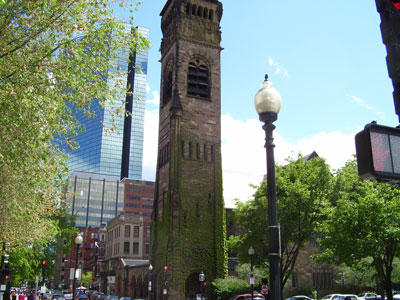
Original uploaded by Swampyank (Transfered by archinform), CC BY-SA 3.0, via Wikimedia Commons; Image Size Adjusted

First Baptist Church of Boston
Historic Boston church featuring striking Romanesque architecture and a legacy that traces back to early religious freedom struggles in colonial America.
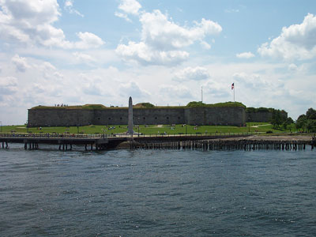
Chris Wood, CC BY-SA 4.0, via Wikimedia Commons; Image Size Adjusted

Fort Independence
Granite bastion fort that provided harbor defenses for Boston is one of the oldest continuously fortified sites of English origin in the United States
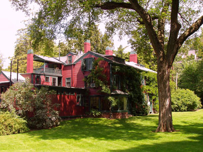
Daderot at en.wikipedia, CC BY-SA 3.0, via Wikimedia Commons; Image Size Adjusted

Frederick Law Olmsted National Historic Site
Historic site preserving the home and office of Frederick Law Olmsted, recognized as the founder of American landscape architecture and the nation's foremost parkmaker of the 19th century
Ian Howard, CC BY-SA 3.0, via Wikimedia Commons; Image Size Adjusted
Harvard Art Museums
Three-museum complex featuring global art collections, rotating exhibitions, and educational programs in a modernized historic building.
Ian Howard, CC BY-SA 3.0, via Wikimedia Commons; Image Size Adjusted
Harvard Museum of Natural History
From Downtown Boston and Cambridge hotels: Take the MBTA Red Line to Harvard Square station, then walk about 15 minutes north along Oxford Street; the Harvard Museum of Natural History is located near Harvard University’s science complex.
Harvard University
Ivy League research university founded in 1636 is the oldest institution of higher learning in the United States and among the most prestigious in the world
Ian Howard, CC BY-SA 3.0, via Wikimedia Commons; Image Size Adjusted
Institute of Contemporary Art
From Downtown Boston: Drive southeast toward the Seaport District via Seaport Boulevard or Congress Street, continue onto Northern Avenue, then turn onto Harbor Shore Drive; the Institute of Contemporary Art is located on the waterfront with nearby parking garages available.
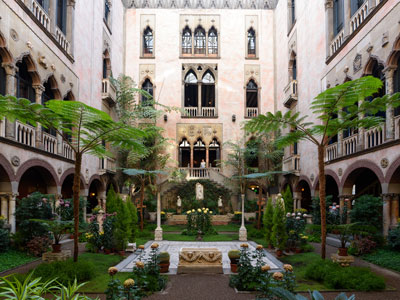
King of Hearts, CC BY-SA 4.0, via Wikimedia Commons; Image Size Adjusted

Isabella Stewart Gardner Museum
Art-filled Venetian-style palace showcasing world-class collections arranged in intimate, atmospheric galleries surrounding a lush central courtyard.
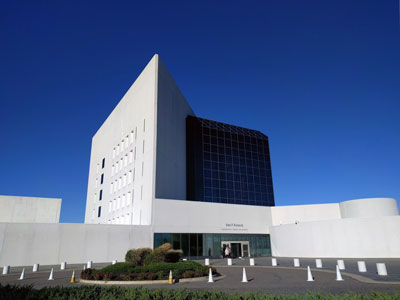
ButteBag, CC BY-SA 4.0, via Wikimedia Commons; Image Size Adjusted

John F. Kennedy Presidential Library and Museum
Modern waterfront museum dedicated to the life, presidency, and legacy of John F. Kennedy, combining immersive exhibits with striking architecture.
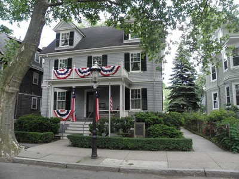
English: NPS Photo, Public domain, via Wikimedia Commons; Image Size Adjusted
.jpg){kind=link}
John Fitzgerald Kennedy National Historic Site
Birthplace and early childhood home of President John F. Kennedy, preserved as a restored house museum reflecting his family life and formative years.
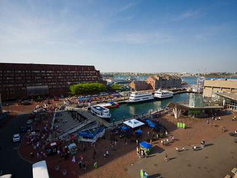
Matt Laskowski from Boston, MA, USA, CC BY-SA 2.0, via Wikimedia Commons; Image Size Adjusted

Long Wharf
Historic waterfront landmark that has served as a vital gateway for maritime travel, trade, and ferry transportation since colonial Boston.
Ian Howard, CC BY-SA 3.0, via Wikimedia Commons; Image Size Adjusted
Longfellow House–Washington’s Headquarters National Historic Site
Historic Georgian mansion offering guided tours, literary exhibits, and gardens tied to Revolutionary and poetic legacies.
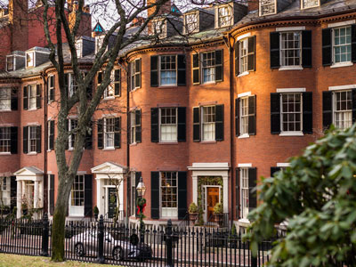
R Boed, CC BY 2.0, via Wikimedia Commons; Image Size Adjusted

Louisburg Square
Elegant and historic residential square offering a peaceful enclave of 19th-century architecture in the heart of Beacon Hill.
Ian Howard, CC BY-SA 3.0, via Wikimedia Commons; Image Size Adjusted
MassArt Art Museum
Contemporary art museum offering rotating exhibitions, public programs, and free admission in a university setting.
Ian Howard, CC BY-SA 3.0, via Wikimedia Commons; Image Size Adjusted
Metropolitan Waterworks Museum
Historic pumping station museum showcasing 19th-century steam engines and the evolution of Boston’s water infrastructure.
Ian Howard, CC BY-SA 3.0, via Wikimedia Commons; Image Size Adjusted
MIT Museum
Interactive science and technology museum showcasing MIT innovations through hands-on exhibits, robotics, and rotating installations.
Ian Howard, CC BY-SA 3.0, via Wikimedia Commons; Image Size Adjusted
Museum of Fine Arts, Boston
World-class art museum featuring over 100 galleries of global masterpieces, special exhibitions, and educational programs.
Ian Howard, CC BY-SA 3.0, via Wikimedia Commons; Image Size Adjusted
Museum of Science
Expansive science center featuring interactive exhibits, live demonstrations, and immersive theater experiences for all ages.
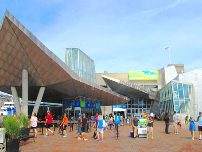
Beyond My Ken, CC BY-SA 4.0, via Wikimedia Commons; Image Size Adjusted

New England Aquarium
Public aquarium located in Boston, featuring the Giant Ocean Tank, a cylindrical 200,000-US-gallon (760,000 l) tank simulating a Caribbean coral reef
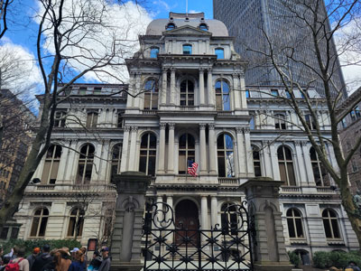
Jeff P from Berkeley, CA, USA, CC BY 2.0, via Wikimedia Commons; Image Size Adjusted
.jpg){kind=link}
Old City Hall
Home to Boston's city council from 1865 to 1969 was one of the first buildings in the French Second Empire style to be built in the United States
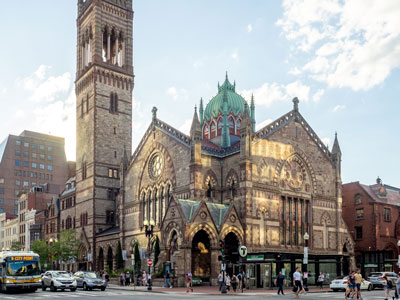
Ajay Suresh from New York, NY, USA, CC BY 2.0, via Wikimedia Commons; Image Size Adjusted
.jpg){kind=link}
Old South Church
Historic United Church of Christ congregation first organized in 1669 and known for its architectural significance as one of the finest High Victorian Gothic churches in New England
Ian Howard, CC BY-SA 3.0, via Wikimedia Commons; Image Size Adjusted
Post Office Square
Urban green space offering landscaped gardens, seasonal events, and a tranquil retreat above an underground parking garage.
Quincy Market
Historic market complex in downtown Boston significant as one of the largest market complexes built in the United States in the first half of the 19th century
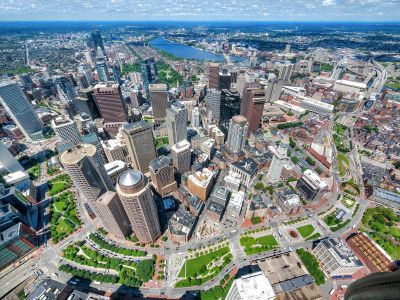
Greenway Conservancy, CC BY-SA 4.0, via Wikimedia Commons; Image Size Adjusted

Rose Fitzgerald Kennedy Greenway
Linear park located in several Downtown Boston neighborhoods consisting of landscaped gardens, promenades, plazas, fountains, art, and specialty lighting systems that stretch over one mile
Gregg Squeglia, CC BY-SA 4.0, via Wikimedia Commons; Image Size Adjusted
Trinity Church
Church know as the birthplace and archetype of the Richardsonian Romanesque style, characterized by a clay roof, polychromy, rough stone, heavy arches, and a massive tower
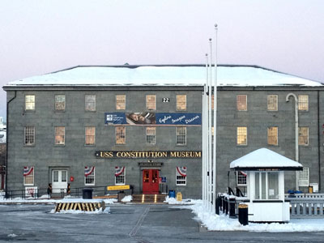
Benoît Prieur, CC0, via Wikimedia Commons; Image Size Adjusted

USS Constitution Museum
Museum tells the story of the USS Constitution ("Old Ironsides") and the people who designed, built, and sailed her
Overview
Boston is the capital and largest city of Massachusetts and the cultural and economic center of New England, and it is one of the oldest and most historic cities in the United States. It is famous as the cradle of the American Revolution, for its Freedom Trail, its universities, such as Harvard and MIT, and its passionate sports fans, who cheer for the Red Sox, Celtics, Bruins, and Patriots. With its brick row houses, harbor, and compact, walkable neighborhoods, Boston has a distinctive European feel and a reputation for education, medicine, and innovation.
Visitors come to Boston to walk the Freedom Trail, to see a game at Fenway Park, and to stroll through Boston Common and the Public Garden. They also come for world-class museums such as the Museum of Fine Arts and the Isabella Stewart Gardner Museum, for the Italian restaurants of the North End, for fresh seafood such as clam chowder and lobster rolls, and for the colleges of Cambridge across the Charles River.
History
Boston was founded in 1630 by Puritan colonists led by John Winthrop on the Shawmut Peninsula, in a place the Native Americans called Shawmut, and it quickly became the leading port and capital of the Massachusetts Bay Colony. Resistance to British taxation made the city the center of the American Revolution: the Boston Massacre took place in 1770, the Boston Tea Party in 1773, and the first battles of the war at Lexington and Concord and at Bunker Hill in 1775, followed by the British evacuation of the city in 1776. In the nineteenth century Boston was a center of abolitionism, literature, and industry, and waves of Irish, Italian, and other immigrants changed the city. The Great Fire of 1872 destroyed much of downtown, and in the twentieth and twenty-first centuries the city reinvented itself as a center for education, healthcare, and technology, with the Big Dig highway project reshaping its center.
The Freedom Trail
The Freedom Trail is a 2.5-mile red-brick line through downtown Boston that links 16 nationally significant historic sites, from the Revolution and early republic, and is the best way to see the city's colonial and Revolutionary past on foot. It starts at Boston Common and includes the Massachusetts State House, Park Street Church, the Granary Burying Ground, where Paul Revere, Samuel Adams, and John Hancock are buried, and King's Chapel, and then the Old Corner Bookstore, the Old South Meeting House, the Old State House, and the site of the Boston Massacre. The trail continues to Faneuil Hall and the Paul Revere House in the North End, and to the Old North Church, with its famous "one if by land, two if by sea" lanterns, and finishes in Charlestown at the USS Constitution, the oldest commissioned warship afloat, and the Bunker Hill Monument.
Universities
Greater Boston is one of the world's great centers of higher education, with more than 50 colleges and universities, and two of the most famous are across the Charles River in Cambridge. Harvard University, founded in 1636, is the oldest institution of higher learning in the United States, with a campus centered on the brick-and-ivy Harvard Yard and the lively Harvard Square, and it is home to the Harvard Art Museums, the Harvard Museum of Natural History, with its famous Glass Flowers, and Widener Library. The Massachusetts Institute of Technology (MIT), founded in 1861 and moved to Cambridge in 1916, is a leading center for science, engineering, and innovation, known for its Great Dome, its Stata Center designed by Frank Gehry, its student "hacks," and the MIT Museum, and it anchors the technology and biotechnology cluster of Kendall Square. Boston University, Northeastern University, Boston College, and Tufts University add to the city's youthful energy.
Sightseeing and Popular Landmarks
Beacon Hill has gas-lit streets and Federal-style row houses, and the gold-domed State House sits at its top, while Faneuil Hall and Quincy Market are a busy marketplace of shops and food stalls. Fenway Park, opened in 1912, is the oldest ballpark in Major League Baseball, with its famous Green Monster wall, and Trinity Church and the Boston Public Library in Copley Square are architectural landmarks. The Boston Tea Party Ships & Museum, the New England Aquarium, and the Cheers bar are popular attractions.
Culture and Museums
The Museum of Fine Arts has one of the largest art collections in the country, and the Isabella Stewart Gardner Museum, in a Venetian-style palace, has a famous central courtyard and was the site of an unsolved art theft in 1990. The John F. Kennedy Presidential Library and Museum, the Museum of Science, the Institute of Contemporary Art, and the Boston Symphony Orchestra and Boston Pops are other cultural institutions, and the Theater District hosts Broadway tours.
Parks
Boston Common, the oldest public park in the United States, and the adjoining Public Garden, with its swan boats and statue of George Washington, are the heart of the city's green space. The Emerald Necklace, designed by Frederick Law Olmsted, connects parks such as the Arnold Arboretum and Franklin Park, and the Charles River Esplanade has paths along the river and the Hatch Shell. The Rose Kennedy Greenway and the Boston Harbor Islands, reached by ferry, offer more places to explore.
Sports
Boston is one of the great sports cities in the country. The Boston Red Sox of Major League Baseball play at Fenway Park and have won nine World Series, including four since 2004, and the Boston Celtics of the NBA and the Boston Bruins of the NHL play at TD Garden, with the Celtics holding 18 championships, a league record. The New England Patriots of the NFL and the New England Revolution of Major League Soccer play at Gillette Stadium in Foxborough, about 30 miles south of the city. The Boston Marathon, held every April on Patriots' Day, is the world's oldest annual marathon.
Seasons and Weather
Boston has a humid continental climate with four distinct seasons. Summers are warm and humid, with highs in the low 80s°F, and winters are cold, with highs in the 30s°F and about 49 inches of snow, often from nor'easters. Spring and fall are the most pleasant seasons, and October's foliage is a highlight. The ocean can keep the city cooler in summer and windier in winter.
This article uses material from Wikipedia as well as information from official tourism and institutional sources. Key references include Meet Boston, Freedom Trail Foundation, Harvard University, Massachusetts Institute of Technology, Museum of Fine Arts, Boston, Boston Red Sox, Boston Celtics, Mass.gov Visit Massachusetts, and National Weather Service Boston/Norton. Wikipedia material is from the articles "Boston" and "Freedom Trail", and is available under the Creative Commons Attribution-Share-Alike License 3.0.
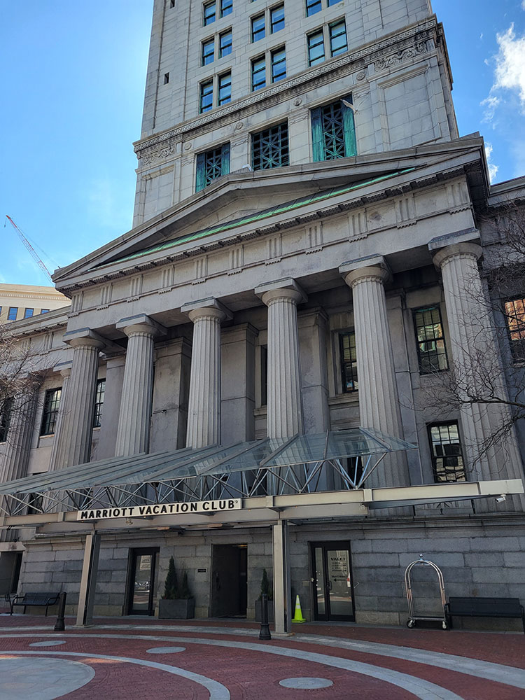
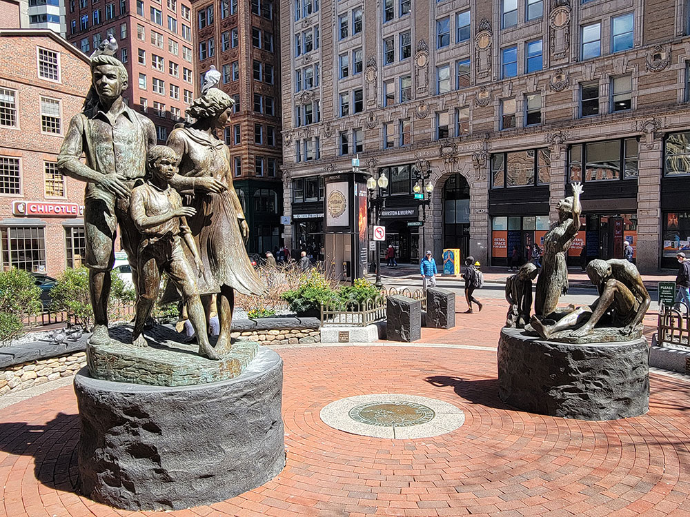
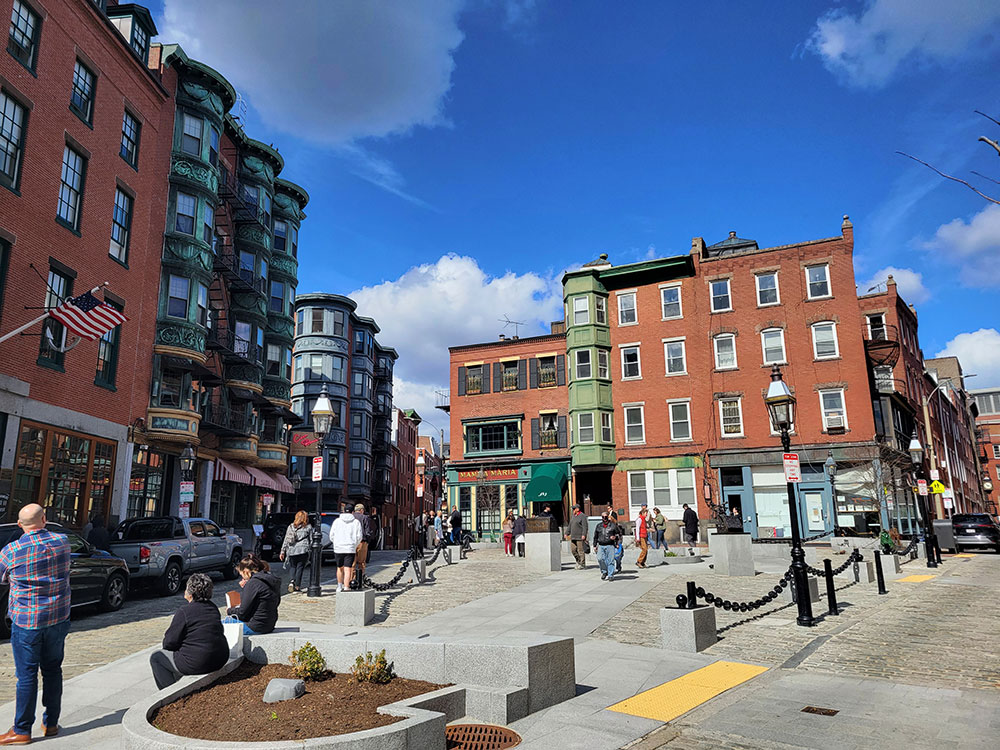
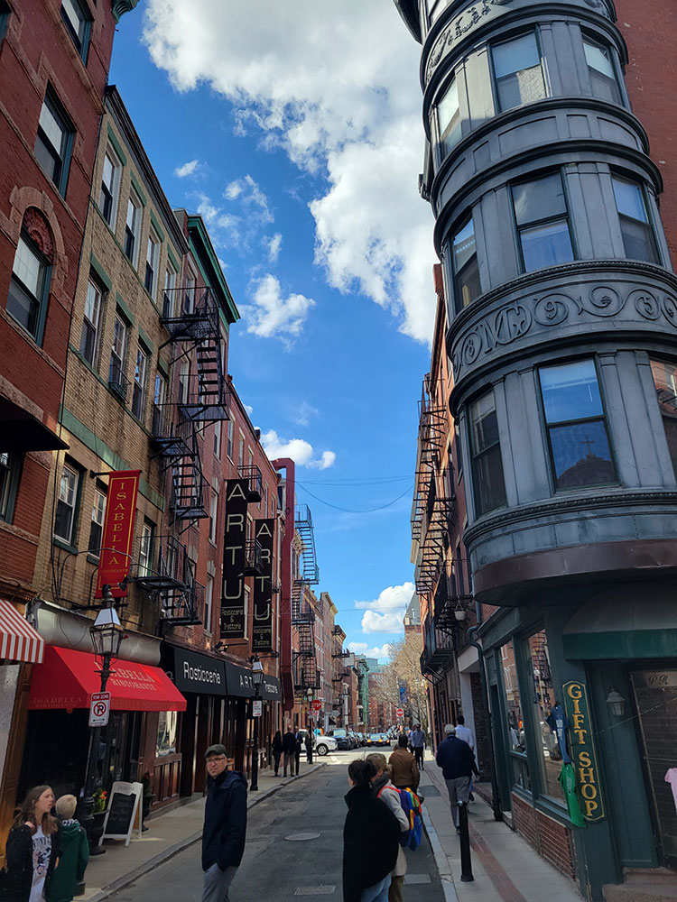
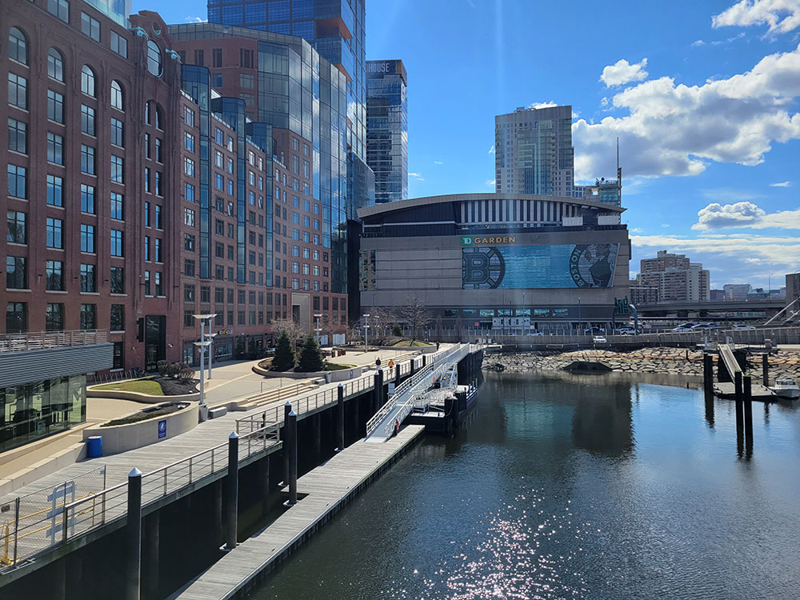
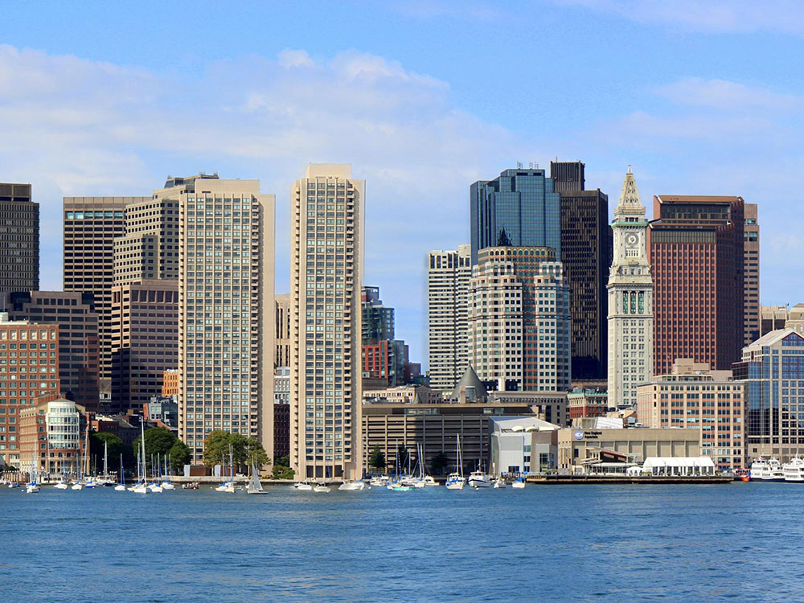
.jpg){kind=link}
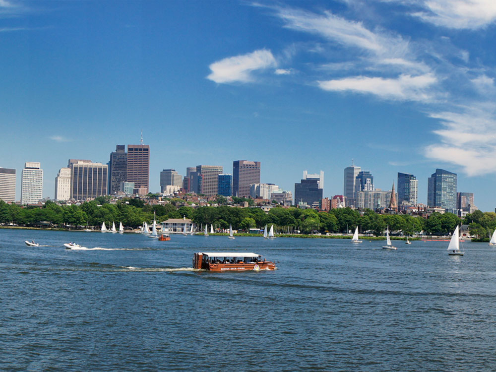
.jpg){kind=link}
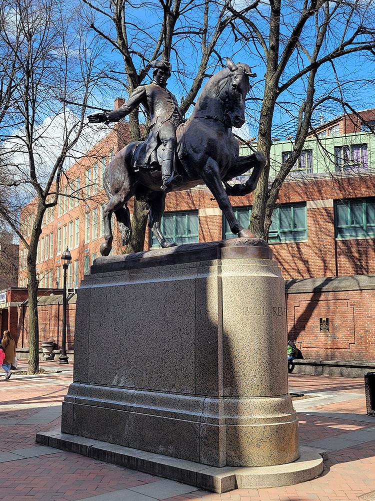